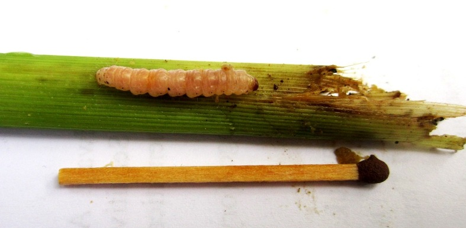

实验用虚构农药标签 禁止用于真实农业生产
PRODUCT C · 玉米杀虫剂
穗巡酰胺·苗护菊酯
玉米杀虫剂 悬浮剂 低毒（实验模拟分级）
一季最多3 次

第1步 先看虫和受害痕迹
叶片一排小圆孔，心叶里有虫粪和碎屑
低龄幼虫身体偏浅、头部较深，先在心叶附近取食，长大后钻进茎秆；越晚发现越难处理。
钻心虫叶片排孔心叶有碎屑幼虫钻茎
陕西咸阳农技资料将玉米螟列为玉米苗期主要防治对象。适用时期：卵集中孵化到幼虫还小、尚未钻进茎秆时。
2
配药容器：先确定装多少水
主示例使用15 L背负式喷雾器15 L 喷雾器15 L 水
本品药剂50 mL
10 L水桶加33 mL
15 L喷雾器加50 mL
16 L喷雾器加53 mL
20 L大桶加67 mL
3
测量容器：用哪样东西量出50 mL药
先用标准量具校准红线200 mL本品农药瓶
照红线取药整瓶不是一次用量
100 mL量筒
到50 mL线看红线就停
50 mL量杯
1满杯装到量杯满线
200 mL一次性纸杯
到预先红线实验前先校准画线
已校准10 mL瓶盖
5满盖先量清一盖容量
1先加一半清水
2按选中量具取50 mL药
3搅匀后补足15 L水
4当天配、当天喷完
不能混用石硫合剂、波尔多液等碱性药剂
用药间隔再次使用至少间隔7天
用量和次数上限15 L水最多60 mL，本季最多3次
喷施重点
- 重点喷玉米心叶和受害部位，抓住幼虫还小的时候。
- 已经钻进茎秆后不要自行加浓；先检查虫龄和心叶覆盖。
- 收获前14天内不要使用。
急救：接触皮肤或眼睛立即用大量清水冲洗；不适或误食时携带标签就医，不自行催吐。储存：原包装加锁存放，远离食品、饲料和水源。
真实照片：Kembangraps / Wikimedia Commons（CC BY-SA 3.0）；陕西适配依据：陕西省农业农村厅《咸阳：玉米苗期病虫的发生与防治》。